Understands what users mean
Search across messages, emails, photos, and more so Siri can act on personal context and not just the words in a single request.
WWDC 26 · Siri AI
Your App Can Get More Inclusive
The technical improvements introduced with Gemini in the new Apple Intelligence generation now allow Siri to handle personal context and on-screen awareness to provide richer app actions.
Personal context
Search across messages, emails, photos, and more so Siri can act on personal context and not just the words in a single request.
On-screen awareness
Answer questions about the content in front of someone and take action on it: “this event,” “that photo,” the thing they’re looking at.
App actions
More systemwide actions let Siri coordinate and finish tasks by gathering features from multiple apps.
App Intents provide the centralized infrastructure to make your content accessible, queryable, and actionable across the entire Apple ecosystem.

App Intents let people finish real tasks through natural language with Siri instead of going through your app's UI.
Simplifying the path to your features isn’t only convenience, it widens who can use them successfully.
Voice & type
Speak or Type to Siri instead of precise taps through dense UI. Helpful for motor, vision, and situational constraints.
Cognitive load
People can ask for direct outcomes (“send”, “find”, “update”) rather than needing to memorize your information architecture.
Discoverability
Features stop living only for users who already know where to look: Siri can invite them in.
Trust
Snippets can be designed to keep the app's personality and confirm important steps. Allowing Siri to drive the experience doesn't mean losing control or clarity.
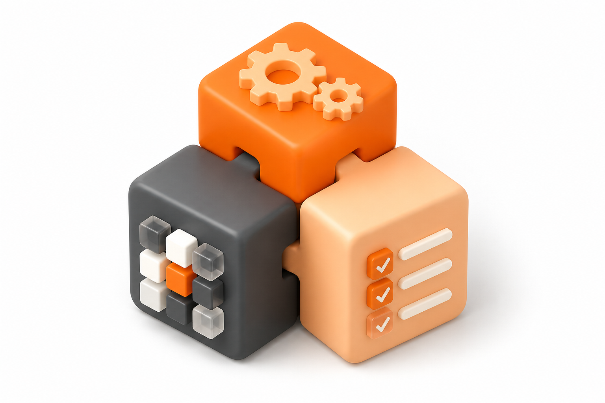
The Verbs
Defines the actions your app can perform and the parameters required to execute them.(e.g.,
create, delete, send).
The Nouns
Lightweight representations of your app’s data objects.Requires an identifier and a query object to allow system retrieval.
The Finite Adjectives
Static types defining constants with special meaning (e.g., types of messages, calendar RSVP
statuses).Backed by String and RawRepresentable.
Schemas are a set of well-known Intents, Entities, and Enums which allow Siri to discover and surface features to users. Schemas are organized into Domains, which group them for a specific category of functionality.
Fully usable with Apple Intelligence and Siri chat.
New in iOS 27
Expanded in iOS 27
Since iOS 18
Full adoption required: Mail, Clock and Messages. Partial schema coverage is not possible for them.
Intents and entities here are not referenced directly in a Siri conversation. They remain useful through Shortcuts.
There's a macro for each one of the schemas along with snippets to quickly create them with autocomplete. Apple recommends creating a subset of your existing models along with a cache strategy to quickly provide them when prompted by system experiences.
@AppEntity(schema: .notes.note)
struct MyCustomNote {
static let defaultQuery = NoteEntityQuery()
let id: <#Identifiable.ID#>
var name: AttributedString
var content: AttributedString?
var attachments: [IntentFile]
var isPinned: Bool
var creationDate: Date?
var modificationDate: Date?
var folder: <#FolderEntity#>?
var displayRepresentation: DisplayRepresentation {
<#DisplayRepresentation#>
}
}@AppIntent(schema: .notes.updateNote)
struct UpdateNoteIntent {
var target: MyCustomNote
var name: AttributedString?
var attachments: [IntentFile]?
var isPinned: Bool?
var folder: <#FolderEntity#>?
func perform() async throws -> some ReturnsValue<MyCustomNote> {
<#code#>
}
}If your app does not support Spotlight yet then you need to donate with a named CSSearchableIndex. Entities that conform to IndexedEntity are made available through lexical and semantic search. Siri can also use the properties of you entities to reason and bring up your entities in chats.
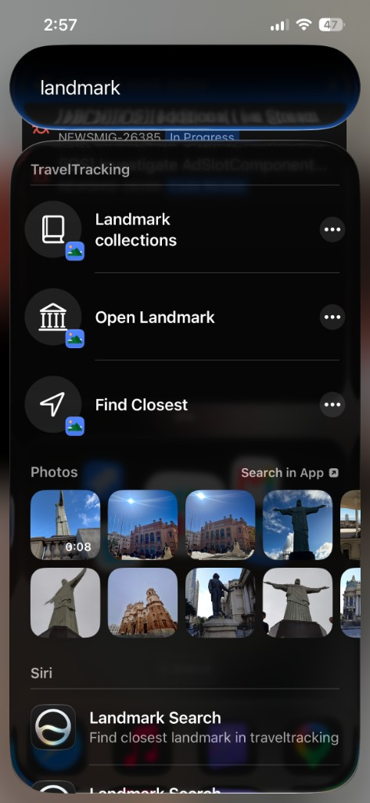
struct LandmarkEntity: IndexedEntity {
@ComputedProperty(indexingKey: \.contentDescription)
var description: String { landmark.description }
@ComputedProperty(
customIndexingKey: CSCustomAttributeKey(
keyName: "LandmarkEntity_continent"
)!
)
var continent: String { landmark.continent }
}static func donateLandmarks(
modelData: ModelData
) async throws {
let entities = await modelData.landmarkEntities
try await CSSearchableIndex(
name: "AppIntentsTravelTracking_Landmarks"
).indexAppEntities(entities)
}Extra attributes
attributeSet for the restFill a CSSearchableItemAttributeSet for non-wrapped fields to describe you entity's content.You can mark properties with @DeferredProperty if they shouldn't be included when the system indexes your entity.
Existing Core Spotlight
Keep your CSSearchableItem pipeline. Call associateAppEntity(_:priority:) on the attribute set. Higher priority elevates that item in suggestions and search results.
Interactions
Ship an OpenIntent so a tap opens your app directly in a screen that has more details about the entity. More than ten results can use ShowInAppSearchResultsIntent.
Siri can use multiple entities and intents across apps to finish a task.
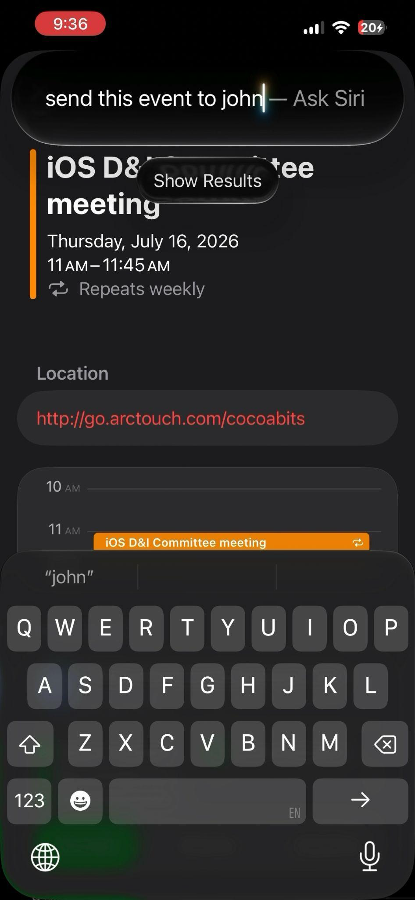
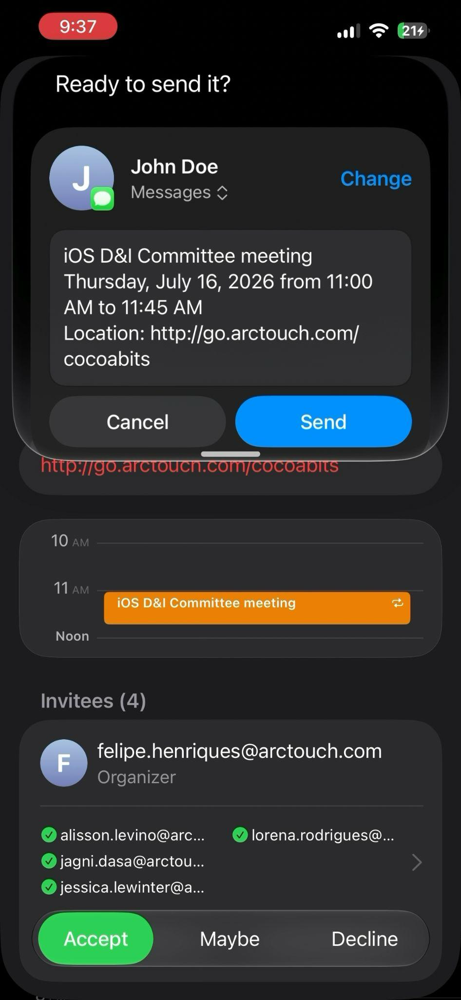
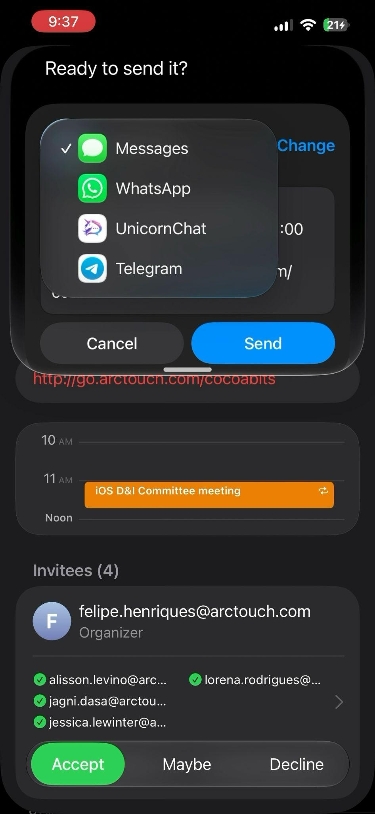
1 · Entities
Views can be associated with entities by setting their appEntityIdentifier.In
SwiftUI Views it's a modifier and in UIKit it's a property of UIViews.Siri is able to reason and reference them as "this" or "3rd <entity>".
2 · Intent
.messages.sendMessageIf multiple apps adopt the schema, Siri allows users to choose which one to use.Alternative representations of your entities can be provided with the Transferable protocol (e.g.: text, image, Codable).This can allow your entities to cover more scenarios and bring more visibility to your app!
3 · Snippet
A confirmation snippet previews the draft. The message can fire without launching the messaging app.Once the intent is done the app can show a result snippet, which can give an opportunity to showcase non-schema intents of your app.
“My app uses Visit Logs and Tags. We have complex charting actions. Nothing fits any of the available schemas.”
You can still expose custom App Intents and Entities for Shortcuts, Spotlight, and Control Center today.
Subset lightweight entities, design snippet journeys, and ship custom intents.When a schema eventually fits, map into it and chain schema intents into your custom flows for more visibility.Working on that can help prepare a foundation for future improvements and new schema launches.
Out-of-domain capabilities remain first-class through Shortcuts and Spotlight and can still surface branded snippets.
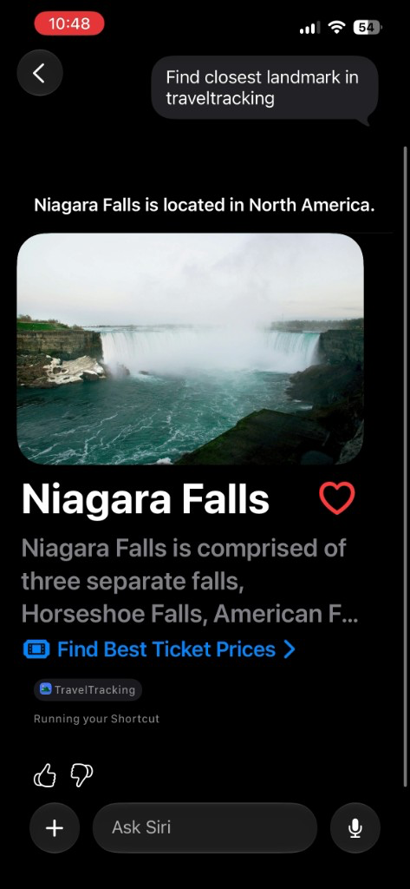
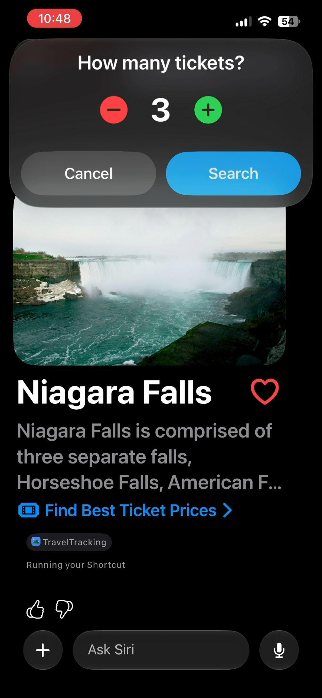
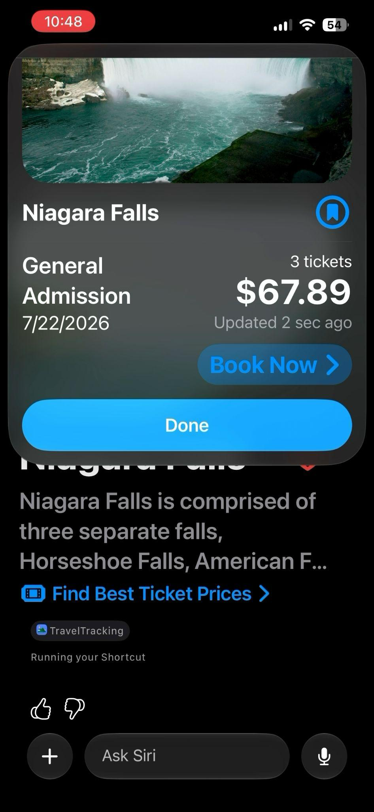
Spotlight
Index lightweight entities so system search can surface your content even when Siri chat cannot natively reason about a niche domain.
Shortcuts
A custom intent (no schema) can still run via an App Shortcut and open a result snippet.Restrictions: only triggered by pre-specified commands set in AppShortcutsProvider and apps are limited to have 10 shortcuts.
Snippet chaining
Snippets can trigger follow-up intents, which can lead to a snippet-based user journey with your app's custom intents.
AppIntentsTesting evaluates intents, entities, and queries through the same infrastructure Siri and Shortcuts use.
let definitions = IntentDefinitions(bundleIdentifier: "com.example.app")
func testCreateCalendar() async throws {
let createCalendar = definitions.intents["CreateCalendarIntent"]
let result = try await createCalendar.makeIntent(
name: "Occupy Saturn",
color: "red"
).run()
XCTAssertEqual(try result.value.title, "Occupy Saturn")
}#if DEBUG
struct ResetDatabaseIntent: AppIntent {
static let title: LocalizedStringResource = "Reset Database"
static let isDiscoverable = false
func perform() async throws -> some IntentResult {
// Clear all data and insert seed records.
}
}
#endifPut tests in a UI testing bundle that shares the app’s code signing team. Launch the app, then create IntentDefinitions(bundleIdentifier:).It discovers registered intents, entities, enums, and queries by string name.
Look up AppIntentDefinition, makeIntent, then run().ResolvedIntentResult uses dynamic member lookup, so you assert properties by name without importing app types. Fast enough for frequent CI.You can mark test-specific intents by setting their isDiscoverable property to false.
func testCreateEventOnCalendar() async throws {
let calendarDef = definitions.entities["CalendarEntity"]
let calendars = try await calendarDef.entities(matching: "Work")
let workCalendar = calendars[0]
let createResult = try await definitions
.intents["CreateEvent"]
.makeIntent(
title: "Sprint Planning",
calendar: workCalendar
)
.run()
let event: AnyAppEntity = try createResult.value
let addResult = try await definitions
.intents["AddAttendee"]
.makeIntent(
event: event,
email: "jada@example.com"
)
.run()
let count: Int = try addResult.value.attendeeCount
XCTAssertEqual(count, 1)
}Resolve entities with entities(matching:) or makeReference(identifier:).You can pass the resulting AnyAppEntity into makeIntent.
func testNewEventIndexedInSpotlight() async throws {
let before = try await eventEntityDefinition.spotlightQuery("Supernova Viewing Party")
XCTAssertTrue(before.isEmpty, "Event should not exist in Spotlight yet")
// ... Create "Supernova Viewing Party" Event
let after = try await eventEntityDefinition.spotlightQuery("Supernova Viewing Party")
XCTAssertEqual(after.count, 1)
XCTAssertEqual(try after[0].title, "Supernova Viewing Party")
}func testEventViewAnnotation() async throws {
try await openEventDefinition.makeIntent(target: "Morning Launch Briefing").run()
// Confirm correct event page
let app = XCUIApplication()
let title = app.staticTexts["Morning Launch Briefing"]
XCTAssertTrue(title.waitForExistence(timeout: 5))
let annotations = try await eventEntityDefinition.viewAnnotations()
XCTAssertEqual(annotations.count, 1, "Expected exactly one view annotation")
XCTAssertEqual(try annotations[0].entity.title, "Morning Launch Briefing")
}func testEventTransferable() async throws {
let eventDef = definitions.entities["EventEntity"]
let events = try await eventDef.entities(matching: "Design Review")
let original = events[0]
let exported = try await original.exported(as: .json)
let reimported = try await eventDef.resolved(from: exported)
let title: String = try reimported.title
XCTAssertEqual(title, "Design Review")
}Spotlight: Query the index via spotlightQuery(_:), passing nil resolves all indexed entities.Screen Awareness: You can use an intent to open a screen for an entity and then validate if your views are properly associated with it through viewAnnotations().Transferable conformation: Round-trip with exported(as:) and resolved(from:).
WWDC26 sessions and App Intents docs — start here after the talk.
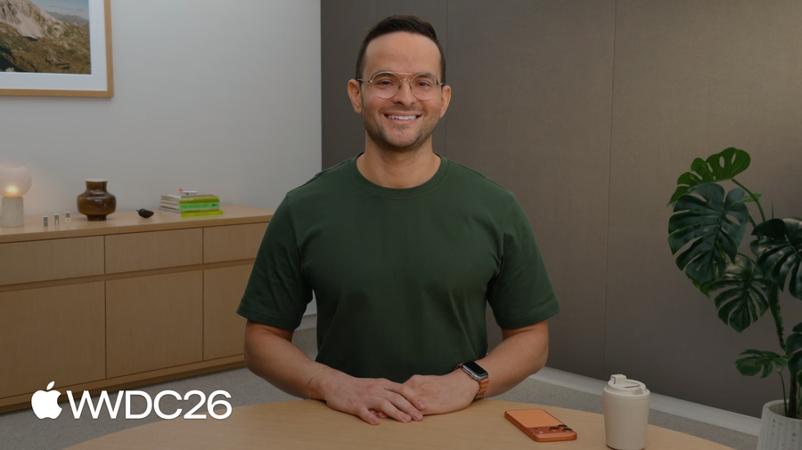
WWDC26 · 343
Polish how your app works with Siri using advanced App Intents APIs.
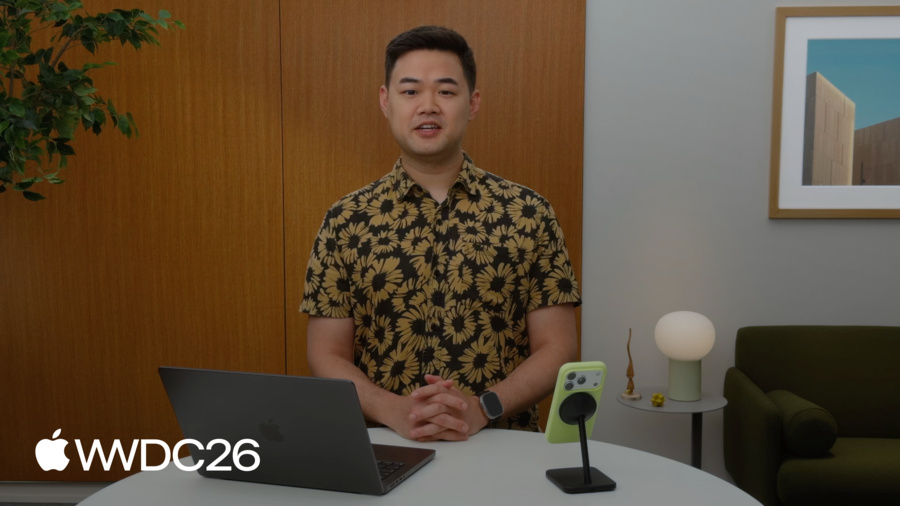
WWDC26 · 344
Adopt App Schemas in an Xcode project so people can ask Siri about your app.
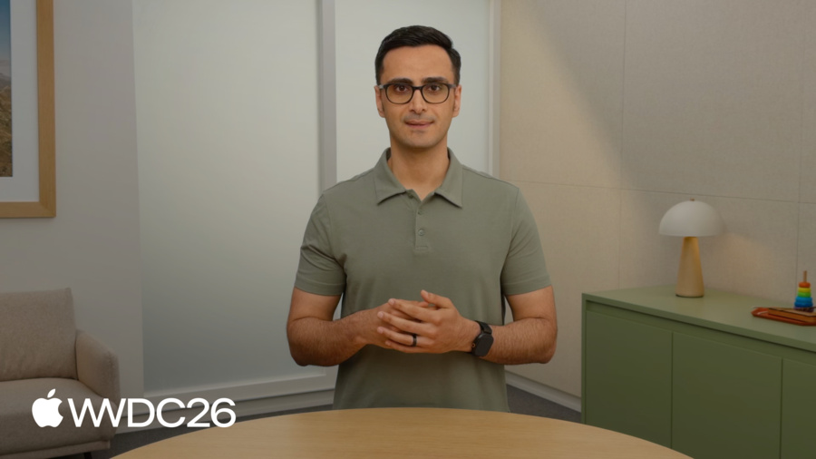
WWDC26 · 345
Advanced features that make intents faster and more relevant.
WWDC26 · 295
Execute intents and verify Entity indexing without UI automation.

Documentation
Make your app’s actions and content available to the rest of the system.
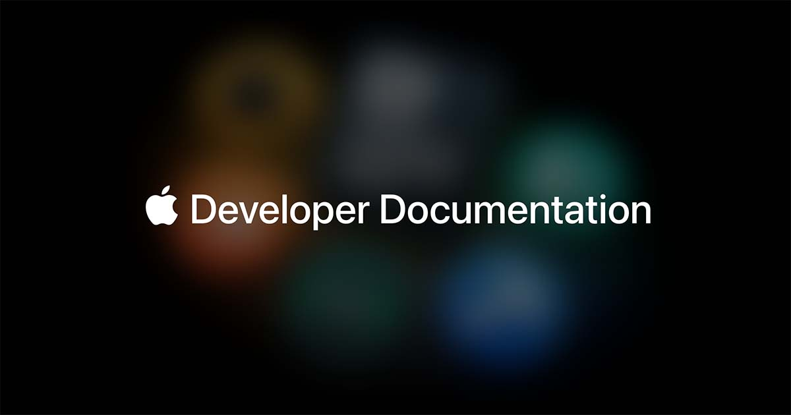
Sample Code
TravelTracking example app with Schema and non-Schema intents and entities
Six ideas to carry into your next App Intents conversation.
App Intents allow users to execute tasks through natural language without launching your app.
Voice, Type to Siri, and branded snippets lower physical, cognitive, and visibility barriers for more people.
The foundation models for system experiences: Intents are verbs, Entities are nouns, and Enums are finite adjectives.
Create a subset of your app data models and a cache layer to promptly answer when Siri needs your features.
Ship lightweight entities and snippet journeys now. Custom intents still power Shortcuts, Spotlight, and Control Center today.
Siri strings entities and intents across apps, so design confirmation snippets and chained follow-ups deliberately.
Thank you
Your app, your possible domains, where to start... let’s talk!
Let’s build something lovable. Together.
Arrow keys · Space · click edges to navigate · F for fullscreen